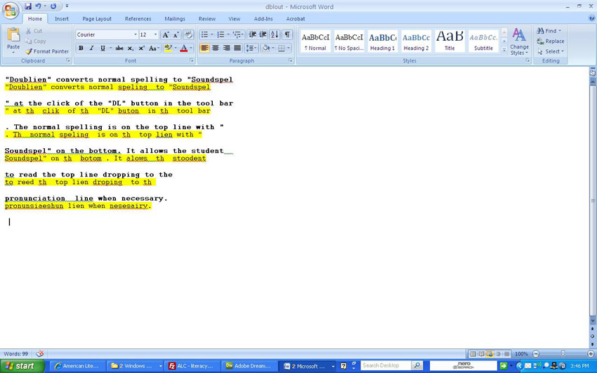

DoubleLine
"Doublien" is a computer program that automatically attaches to Microsoft Word, designed by Alan Mole. It converts normal spelling to "Soundspel" at the click of the "DL"button in the tool bar. The normal spelling is on the top line with "Soundspel" on the bottom. It allows the student to read the top line dropping to the pronunciation line when necessary. Click on the image (right) to see a screenshot.
Caution: Do not download if you have macros added to Outlook. It will destroy them.
To use DoubleLine, choose:
Click 'Open' or 'Run' (not Save) when asked. Say 'Yes' to everything else. Open Word. Type as many lines of text as you wish. When typing is finished click 'DL'. Wait a few seconds. Your text will appear in DoubleLine and may be printed out in the usual way.
To remove the program and icon click Tools, Macros, and in the window that appears click Uninstall DL.
|